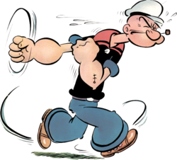
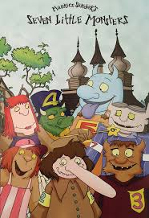
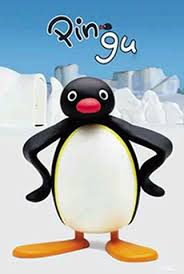

É uma série de desenho animado americana produzido pela King Features Syndicate TV que foi lançado entre 1960 e 1963 com 220 episódios produzidos. Os episódios foram produzidos por uma variedade de estúdios de produção e exibidos em sindicação de transmissão até a década de 1990.

Sobre o personagem
Popeye é um marinheiro fictício que apareceu pela primeira vez em uma tira cômica criada por Elzie Crisler Segar. Ele é conhecido por sua força sobre-humana, que adquire ao consumir espinafre. O personagem se tornou um ícone cultural e foi adaptado para várias mídias, incluindo desenhos animados, filmes e séries de televisão.
Curiosidades
O nome "Popeye" é uma referência ao seu olho protuberante.
O personagem foi inspirado em um marinheiro real chamado Frank "Rocky" Fiegel.
Popeye fez sua primeira aparição em 17 de janeiro de 1929, na tira cômica "Thimble Theatre".
O espinafre se tornou um símbolo de força devido à popularidade do personagem.
Os Sete Monstrinhos
Seven Little Monsters (Os Sete Monstrinhos em português) é uma série de desenho animado canadense criada pelo escritor americano Maurice Sendak e baseada no livro de mesmo nome. A série foi produzida pela Nelvana em parceria com a chinesa Suzhou Hong Ying Animation e Philipine Animations Studio Incorporated (PASI) de 2000 a 2003.

Enredo
Belezas à parte, sete monstrinhos mostram como uma família unida, engraçada, divertida e inteligente resolve seus inúmeros problemas. Todos moram na rua Castanheira, nº 1234567, Centerville, E.U.A.; e ficam o tempo todo sob os cuidados da mãe.
Cada um dos sete irmãos tem diferentes feições monstruosas e divertidas personalidades. Com muitas gargalhadas e vários contratempos, eles enfrentam os desafios da infância e ajudam uns aos outros.
Curiosidades
A série foi inspirada no livro infantil de Maurice Sendak, que também é conhecido por "Where the Wild Things Are".
Os personagens foram projetados para serem únicos e memoráveis, cada um com suas próprias características físicas e traços de personalidade.
A série aborda temas como amizade, família e resolução de problemas de forma divertida e educativa.
Os Sete Monstrinhos se tornou um clássico entre as crianças e é lembrado por sua animação colorida e histórias envolventes.
Pingu
Pingu é uma série de televisão de animação voltada para o público infantil suíça, feita utilizando uma técnica de animação chamada claymation, criada por Otmar Gutmann e Erika Brueggemann, e produzida de 1990 a 2006 para a televisão britânica pelo The Pygos Group (anteriormente Tricksfilm Studios e Pingu Filmstudio). Centra-se numa família de pinguins antropomórficos que vivem no Polo Sul; o personagem principal é o filho da família e o personagem-título, Pingu. A série original teve 104 episódios e foi exibida de 7 de Março de 1990 a 9 de Abril de 2000, a série foi revivida de 2003 a 2006 por mais 52 episódios na BBC Two. Ela foi indicada a um prêmio BAFTA em 2005.

Enredo
Exibido em curtas de 5 minutos, a animação conta a história de um pinguim que vive no Polo Sul com seu pai, que trabalha como carteiro, sua mãe e sua pequena irmã, Pinga.Na vila onde Pingu vive, há muitas coisas que existem em cidades comuns: parque de diversão, escolas, comércio e muitos outros lugares que são afastados da casa de Pingu.O melhor amigo de Pingu é um outro pinguim chamado Pingo. Além disso, ambos são amigos de uma foca chamada Robby.
Curiosidades
Pingu é conhecido por sua linguagem única, que é uma mistura de sons e grunhidos, tornando-o facilmente reconhecível.
A série foi criada por Otmar Gutmann e Erika Brueggemann, e a animação é feita com massinha de modelar.
Pingu foi dublado em vários idiomas e se tornou popular em todo o mundo, especialmente na Europa.
O personagem Pingu é frequentemente visto usando um cachecol vermelho e um chapéu azul.
A série aborda temas como amizade, família e resolução de conflitos de forma lúdica e educativa.